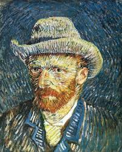
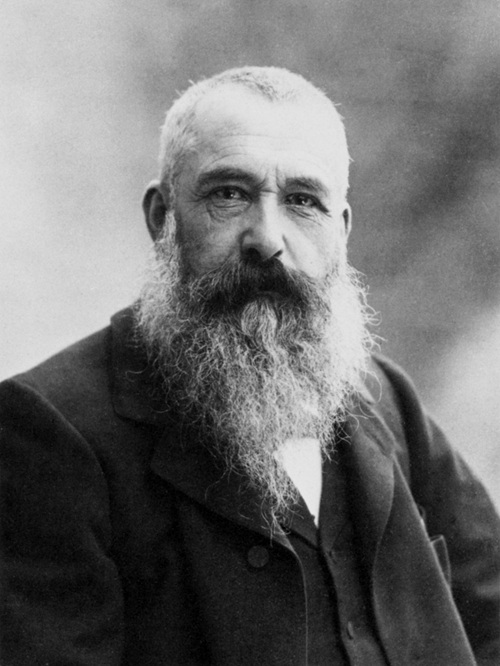
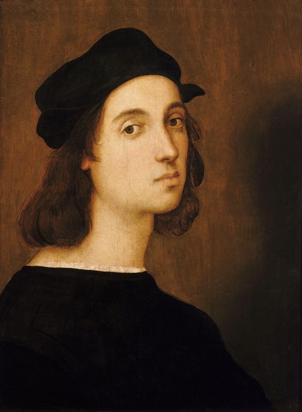
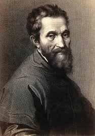
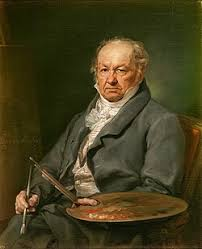
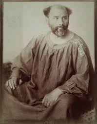
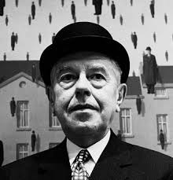
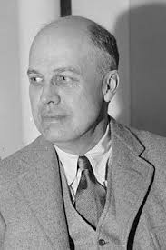
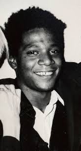
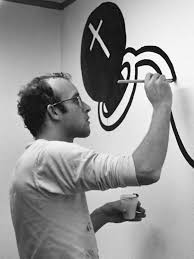

Sanatın Mimarları
"Her sanatçı, fırçasını kendi ruhuna batırır."

Vincent van Gogh
Hollandalı post-empresyonist ressam. Yaşamı boyunca anlaşılmamış, mental sorunlarla boğuşmuş ancak ölümünden sonra modern sanatın en büyük öncülerinden biri kabul edilmiştir. Renkleri, duygularını ifade etmek için cesurca kullanır. "Yıldızlı Gece" en bilinen eseridir.

Claude Monet
Fransız İzlenimcilik (Empresyonizm) akımının kurucusudur. İsmini "İzlenim: Gün Doğumu" tablosundan alan akımın en sadık uygulayıcısıdır. Işığın doğa üzerindeki değişen etkilerini yakalamak için aynı manzarayı (Nilüferler) defalarca resmetmiştir.

Leonardo da Vinci
Rönesans döneminin en büyük dehası; ressam, heykeltıraş, mimar ve bilim insanı. "Mona Lisa" ve "Son Akşam Yemeği" tablolarıyla sanat tarihine yön vermiştir. Sfumato (dumanlı geçiş) tekniğinin ustasıdır.

r
Raffaello Sanzio (Rafael)
Yüksek Rönesans'ın zarafet ve netlik ustasıdır. Michelangelo ve Da Vinci ile birlikte dönemin "üç büyük ustası"ndan biridir. Vatikan'daki "Atina Okulu" freski, felsefe ve sanatın mükemmel uyumunu simgeler.

Michelangelo Buonarroti
Kendisini "ressam"dan çok "heykeltıraş" olarak tanımlasa da, Sistine Şapeli'nin tavanına yaptığı "Adem'in Yaratılışı" freskiyle resim sanatının zirvesine çıkmıştır. İnsan anatomisini en güçlü ve dramatik şekilde tasvir eder.

Francisco Goya
İspanyol Romantizminin en önemli ismidir. İlk dönemlerinde saray ressamlığı yapsa da, sonraki yıllarda savaşın dehşetini ve insan ruhunun karanlık yönlerini işlediği "Kara Resimler" serisiyle tanınır. Modern resmin öncüsü sayılır.

Gustav Klimt
Avusturyalı sembolist ressam ve Viyana Sezession grubunun kurucusu. Eserlerinde altın varak kullanmasıyla tanınan "Altın Dönem"i ile meşhurdur. "Öpücük" tablosu, aşkın ve dekoratif sanatın en ikonik örneğidir.

Frida Kahlo
Meksikalı ressam. Geçirdiği kazalar ve sağlık sorunları nedeniyle çektiği fiziksel ve ruhsal acıyı otoportrelerine yansıtmıştır. Sürrealist olarak tanımlansa da o, "Ben rüyaları değil, kendi gerçekliğimi resmediyorum" demiştir.

René Magritte
Belçikalı sürrealist ressam. Sıradan nesneleri (elma, şapka, pipo) alışılmadık bağlamlarda kullanarak izleyicinin gerçeklik algısını sorgular. "İmgelerin İhaneti" (Bu bir pipo değildir) eseri felsefi bir başyapıttır.

Edward Hopper
Amerikan gerçekçiliğinin en önemli ressamı. Eserlerinde modern şehir hayatının yalnızlığını, sessizliğini ve melankolisini işler. "Gece Kuşları" (Nighthawks), gece yarısı bir restoranda oturan yalnız insanları anlatır.

Jean-Michel Basquiat
Sokak sanatını (graffiti) yüksek sanat galerilerine taşıyan Neo-ekspresyonist ressam. Eserlerinde taç sembolü, iskeletler ve yoğun renkler kullanarak ırkçılık, sınıf ayrımı ve güç dengelerini eleştirmiştir. Genç yaşta gelen şöhreti ve trajik ölümüyle efsaneleşmiştir.

Keith Haring
Pop art ve graffiti sanatçısı. New York metrolarına çizdiği basit, kalın çizgili, hareket eden figürler ve "Emekleyen Bebek" sembolüyle tanınır. Sanatını sosyal aktivizm için kullanmış, herkesin anlayabileceği bir dil oluşturmuştur.

Banksy
İngiliz sokak sanatçısı. Kimliği hala gizlidir. Duvarlara yaptığı şablon (stencil) graffitilerle savaş karşıtı, antikapitalist ve çevreci mesajlar verir. "Balonlu Kız" ve "Çiçek Atan Adam" en bilinen eserleridir.